AI For Humanity
Lecture 12: Double ML - Second Serving
2025-11-26
Previously on “AI For Humanity”
- Talked about estimands — interpretable quantities we would like to estimate
- We link causal estimand to estimable estimand by causal assumptions
- If assumptions hold we can estimate the causal estimand using our data
- Estimand often depends on high-dimensional nuisances
- Need to estimate nuisances — but they are not interesting in themselves
- AI For Humanity — therefore also for Econometricians1
- Use AI/Machine Learning to deal with nuisances
- Naive approach by plugging in machine learners doesn’t work (generally)
- Need to be more clever — Double/Debiased Machine Learning is that
- Neyman Orthogonality and Cross-fitting as central components
Double/Debiased Machine Learning Recap
- Target parameter (estimand) \(\theta_0\) defined as the solution to a moment condition \[\begin{align} E\left[ \psi(W; \theta_{0}, \eta_{0}) \right] & = 0 \end{align}\] where \(\eta_{0}\) is a nuisance parameter, \(\psi\) a Neyman orthogonal score function and \(W\) a tuple of data (e.g. \(W = (Y, D, X)\))
- Estimating \(\eta_{0}\) using machine learning leads to regularization bias and overfitting bias
- Neyman orthogonality: \[\begin{align} \frac{\partial}{\partial \lambda} E\left[ \psi(W; \theta_{0}, \eta_{0} + \lambda [\eta - \eta_{0}]) \right] \Big|_{\lambda =0} & = 0, \quad \forall \eta \in \mathcal{T}, \quad \lambda \in [0, 1) \end{align}\]
- Cross-fitting to reduce dependence between first-step estimation error and the data
- Neyman orthogonality alleviates regularization bias
- Cross-fitting alleviates overfitting bias
- Focus on estimand frees our mind and heals our soul
DML Estimator
A DML estimator is a plug-in estimator that leverages a first-step nuisance parameter estimator by relying on Neyman orthogonal scores and cross-fitting
A DML estimator solves: \[\begin{align} \label{eq:dml} \hat{\theta}: \quad \frac{1}{n} \sum_{k=1}^{K} \sum_{i \in I_{k}} \psi(W_{i}; \hat{\theta}, \hat{\eta}_{-k}) = 0 \end{align} \tag{1}\]
where:
- \(\{I_{k}\}_{k=1}^{K}\) is a random partition of the individuals \(\{1, \ldots, n\}\) into \(K\) subsamples
- \(\{\hat{\eta}_{-k}\}_{k=1}^{K}\) are cross-fitted nuisance parameter estimators, each calculated on the observations excluding those in the sub-sample \(I_{k}\)
General DML Algorithm

The search for estimands
- We’ll consider two methods today
- Difference-in-Differences
- Arguably the most popular method in the social sciences1
- Interesting in itself
- Also a good showcase of the importance of being clear about what your are estimating (i.e. your estimand)
- Instrumental Variables
- Estimand of interest is the LATE
Two period Difference-in-Differences
- \(n\) units observed in two periods \(t \in \{0, 1\}\)
- \(Y_{t}\) outcome
- \(D\) binary treatment equal to \(1\) for the treated units
- Potential outcomes (POs): \(Y_t(d)\) where \(t,d\in\{0,1\}\)
- Observed outcome \(Y_{t} = DY_{t}(1) + (1 - D)Y_{t}(0)\)
- Estimand, the average treatment effect on the treated (ATT):
\[\begin{align} \tau := E[Y_{1}(1) - Y_{1}(0) \mid D = 1] = E[Y_{1} \mid D = 1] - E[Y_{1}(0) \mid D = 1] \end{align} \tag{2}\]
- Data: \((Y_1, Y_0, D)\)
DID illustration
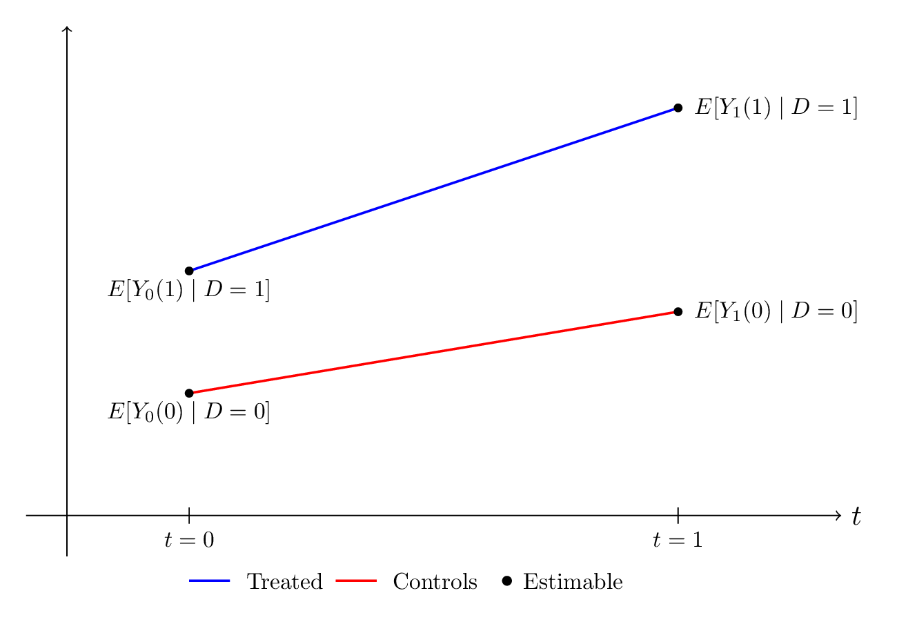
DID illustration
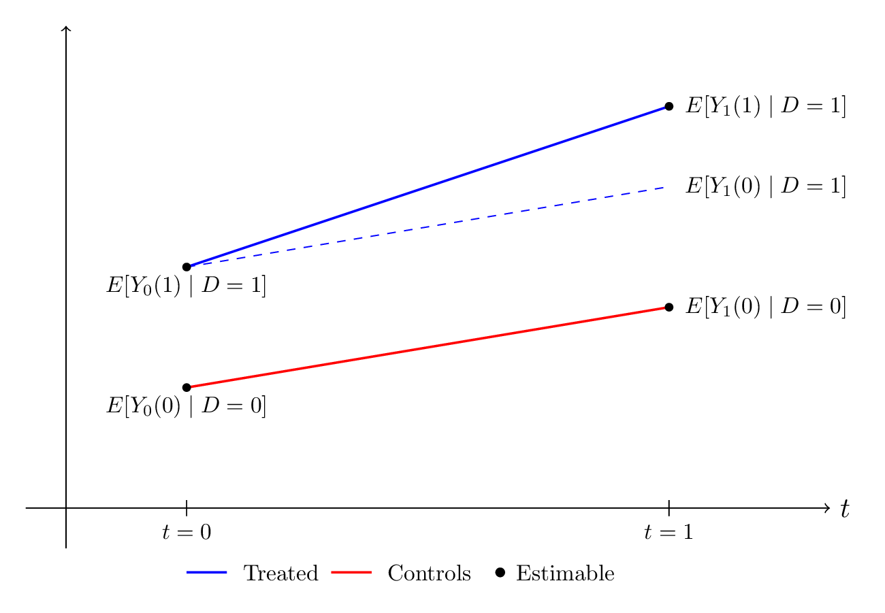
DID illustration
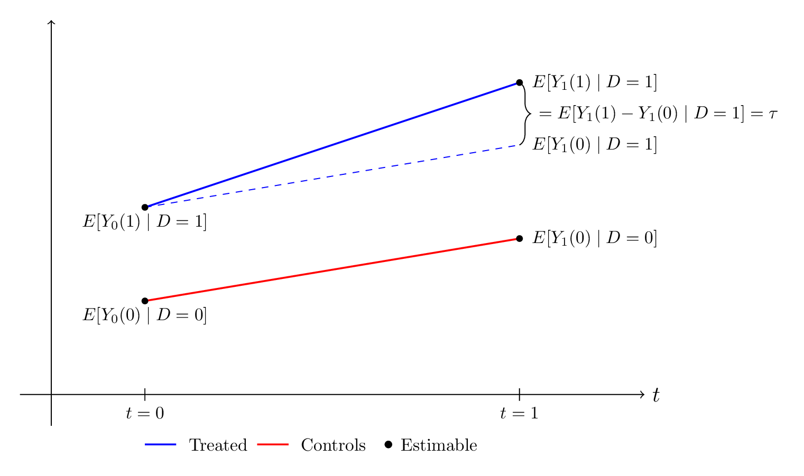
DID illustration
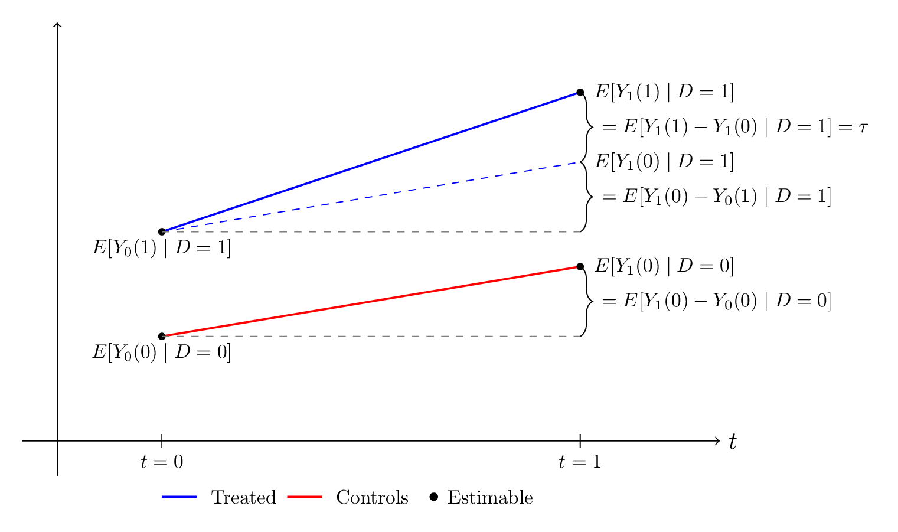
Identifying assumptions
- Consistency
\[\begin{align} Y_{t} = DY_{t}(1) + (1 - D)Y_{t}(0) \end{align}\]
- No Anticipation (NA)
\[\begin{align} E[Y_{0}(0) \mid D = 1] = E[Y_{0}(1) \mid D = 1] \end{align}\]
- Parallel Trends (PT)
\[\begin{align} E[Y_{1}(0) - Y_{0}(0) \mid D = 1] = E[Y_{1}(0) - Y_{0}(0) \mid D = 0] \end{align}\]
DID illustration
DID illustration
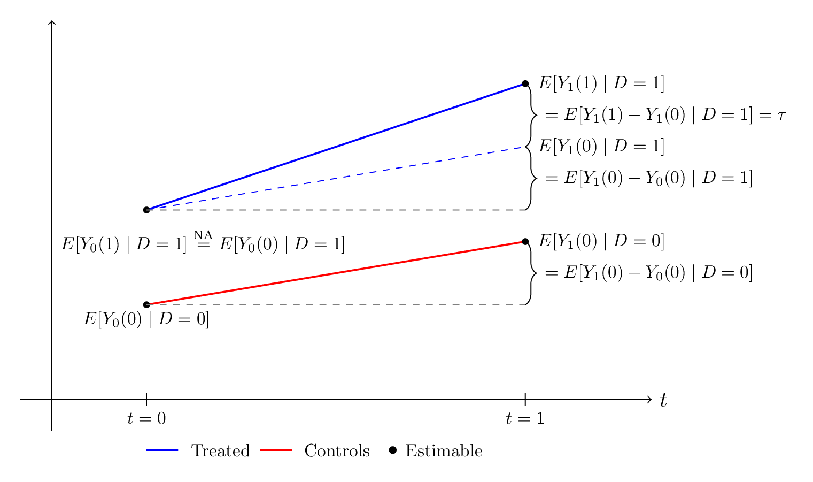
DID illustration
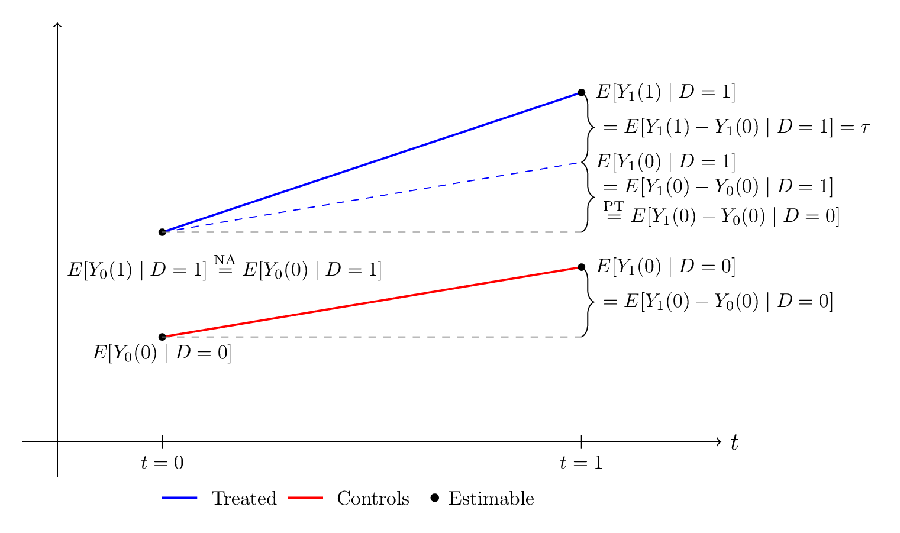
Identification with Consistency, NA and PT assumptions
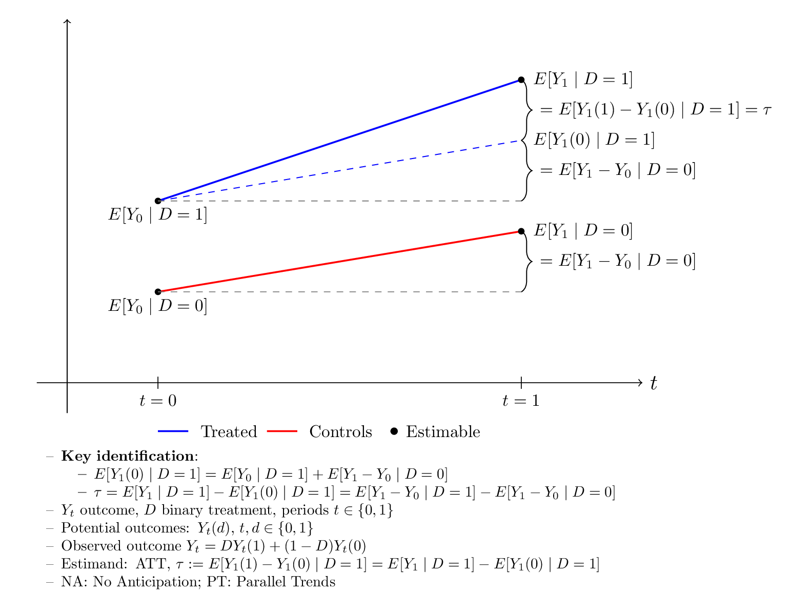
What we came from
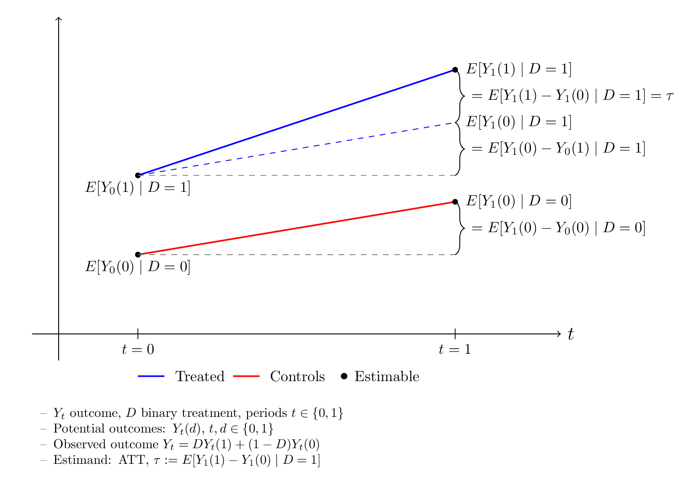
Identification two period simple DID
- Counterfactual for the treated identified by:
\[\begin{align} E[Y_{1}(0) \mid D = 1] = E[Y_{0} \mid D = 1] + E[Y_{1} - Y_{0} \mid D = 0] \end{align}\]
- Plugging this into the ATT gives the indentified parameter:
\[\begin{align} \tau & = E[Y_{1} \mid D = 1] - E[Y_{1}(0) \mid D = 1] \\ & = E[Y_{1} - Y_{0} \mid D = 1] - E[Y_{1} - Y_{0} \mid D = 0] \end{align}\]
- A difference in differences
- Natural plug-in estimator using sample averages:
\[\begin{align} \hat{\tau} = E_{n}[Y_{1} - Y_{0} \mid D = 1] - E_{n}[Y_{1} - Y_{0} \mid D = 0] \end{align}\]
OLS estimator two period DID
- Data: \(n\) i.i.d. tuples \((Y_{i0}, Y_{i1}, D_{i}, T_{i})\) where
- \(Y_{i0}\) outcome in period \(t = 0\)
- \(Y_{i1}\) outcome in period \(t = 1\)
- \(D_{i} = \mathbf{1}\{\text{unit $i$ treated in $t = 1$}\}\) treatment indicator
- \(T_{i} = \mathbf{1}\{t = 1\}\) post-treatment period dummy
- Linear model:
\[\begin{align} Y_{it} = \alpha_{1} + \alpha_{2}T_{i} + \alpha_{3} D_{i} + \tau_{\text{ols}}(T_{i} \cdot D_{i}) + \varepsilon_{it}, \quad E[\varepsilon_{it} \mid D_{i}, T_{i}] = 0 \end{align}\]
- Under the same assumptions, \(\tau_{\text{ols}} = \tau\)
- OLS estimator \(\hat{\tau}_{\text{ols}}\) equivalent to the plug-in estimator \(\hat{\tau}\)
Exercise: Plug-in and OLS
- Dataset as in previous slide
- Download the dataset
or directly in Python:
- Implement the plug-in and OLS estimator; apply the estimators on the dataset
Something is missing…
Covariates \(X\)
Usually parallel trends assumption more plausible conditional on covariates
Condtional No Anticipation (CNA)
\[\begin{align} E[Y_{0}(0) \mid X, D = 1] = E[Y_{0}(1) \mid X, D = 1] \end{align}\]
Conditional Parallel Trends (CPT) \[\begin{align} E[Y_{1}(0) - Y_{0}(0) \mid X, D = 1] = E[Y_{1}(0) - Y_{0}(0) \mid X, D = 0] \end{align}\]
Overlap
\[\begin{align} \exists \epsilon > 0: P(D = 1) \geq \epsilon \text{ and } P(D = 1 \mid X) \leq 1 - \epsilon \end{align}\] i.e. there is a treatment group and controls for every value of \(X\)
Hackin’ away
Conditional ATT (CATT)
\[\begin{align} \tau(X) &= E[Y_{1}(1) - Y_{1}(0) \mid X, D = 1] \\ &= E[Y_{1}\mid X, D = 1] - E[Y_{1}(0)\mid X, D = 1] \end{align}\]
Add \(0\) trick:
\[\begin{align} E[Y_{1}(0)\mid X, D = 1] &= E[Y_{1}(0)\mid X, D = 1] \pm E[Y_{0}(0)\mid X, D = 1] \\ &= E[Y_{0}(0)\mid X, D = 1] + E[Y_{1}(0) - Y_{0}(0)\mid X, D = 1] \\ &\overset{\text{CNA}}{=} E[Y_{0}(1)\mid X, D = 1] + E[Y_{1}(0) - Y_{0}(0)\mid X, D = 1] \\ & \overset{\text{CPT}}{=} E[Y_{0}(1)\mid X, D = 1] + E[Y_{1}(0) - Y_{0}(0)\mid X, D = 0] \\ &= E[Y_{0}\mid X, D = 1] + E[Y_{1} - Y_{0}\mid X, D = 0] \end{align}\]
Hence the CATT:
\[\begin{align} \tau(X) = E[Y_{1} - Y_{0}\mid X, D = 1] - E[Y_{1} - Y_{0}\mid X, D = 0] \end{align}\]
CATT to ATT by the LIE
- Derive the ATT from the CATT using the LIE:
\[\begin{align} \tau &= E[ \underbrace{ E[Y_{1}(1) - Y_{1}(0) \mid X, D = 1] }_{\tau(X)}\mid D = 1 ] \\ &= E\left[ E[Y_{1} - Y_{0}\mid X, D = 1] \mid D = 1\right] - E[E[Y_{1} - Y_{0}\mid X, D = 0] \mid D = 1] \\ &= E[Y_{1} - Y_{0}\mid D = 1] - E[E[Y_{1} - Y_{0}\mid X, D = 0] \mid D = 1] \end{align}\]
- The Law of Iterated Expectations (LIE)
- It might be called the LIE — but it’s a truth in the deepest sense
- We used for \(X, Y, Z\) random variables: \(E[E[Y \mid X, Z] \mid Z] = E[Y \mid Z]\)
- With \(\Delta Y := Y_{1} - Y_{0}\):
\[\begin{align} \tau &= E[\Delta Y\mid D = 1] - E[E[\Delta Y\mid X, D = 0] \mid D = 1] \end{align} \tag{3}\]
But why not just OLS on model with covariates?
- Extend previous model with covariates:
\[\begin{align} Y_{it} = \alpha_{1} + \alpha_{2}T_{i} + \alpha_{3} D_{i} + \tau_{\text{ols}}(T_{i} \cdot D_{i}) + \theta' X_{i} + \varepsilon_{it}, \quad E[\varepsilon_{it} \mid X_{i}, D_{i}, T_{i}] = 0 \end{align} \tag{4}\]
- Seems good! However, Equation 4 implicitly imposes:
- \(E[Y_{1}(1) - Y_{1}(0) \mid X, D = 1] = \tau_{\text{ols}}\)
- For \(d \in \{0, 1\}\): \(E[Y_{1} - Y_{0} \mid X, D = d] = E[Y_{1} - Y_{0} \mid D = d]\)
- The two implicit assumption means that the regression model:
- Assumes homogeneous in \(X\) treatment effects
- Rules out \(X\)-specific trends in both treated and comparison groups
- If the implicit assumptions are violated, the estimand \(\tau_{\text{ols}}\) is, in general, different from the ATT, \(E[Y_{1}(1) - Y_{1}(0) \mid D = 1]\)
- This motivates the use of a DML estimator instead to target the ATT directly
Neyman orthogonal score for the ATT in two-period DID setup
- Identification got us Equation 3
- Neyman orthogonal score for our parameter:
\[\begin{align} \varphi(W; \tau, \eta_{0}) & = \frac{D - P(D = 1 \mid X)}{P(D = 1)[1 - P(D = 1 \mid X)]} (\Delta Y - E[\Delta Y\mid X, D = 0]) - \frac{D}{P(D = 1)} \tau \\&= \frac{D - m_{0}(X)}{p_{0}[1 - m_{0}(X)]} [\Delta Y - g_{0}(0, X)] - \frac{D}{p_{0}} \tau, \end{align}\] where \(W = (Y_{1}, Y_{0}, D, X)\) data, \(\tau\) our estimand the ATT, and \(\eta = (p, m, g)\) are the nuisance parameters with true values: \[\begin{align*} m_{0}(X) := P(D = 1 \mid X), \quad g_{0}(0, X) := E[\Delta Y\mid X, D = 0], \quad p_{0} := P(D = 1) \end{align*}\]
- DML framework enables use of machine learners for estimating potentially high-dimensional \(m_{0}(X)\) and \(g_{0}(0, X)\) (simple average enough for \(p_{0}\) :=)
DML Algorithm DID
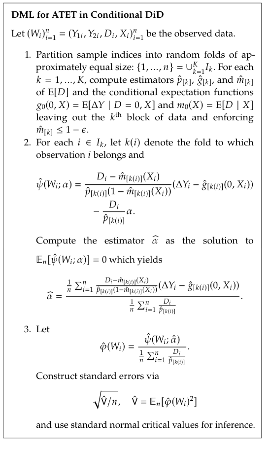
Exercise: Non-linear DGP
- Non-linear DGP; nuisances non-linear and high-dimensional
- DML Algorithm DID; Score
- Helpers:
- StratifiedKFold
- DummyRegressor
- cross_val_predict
np.clip- See next slide for snippet
# True ATT equals 2
>>> df.head(2)
shape: (2, 9)
┌─────┬─────┬────────────┬─────┬───────────┬───────────┬──────────┬───────────┬───────────┐
│ id ┆ t ┆ Y ┆ D ┆ X1 ┆ X2 ┆ X3 ┆ X4 ┆ ite │
│ --- ┆ --- ┆ --- ┆ --- ┆ --- ┆ --- ┆ --- ┆ --- ┆ --- │
│ i64 ┆ i32 ┆ f64 ┆ i32 ┆ f64 ┆ f64 ┆ f64 ┆ f64 ┆ f64 │
╞═════╪═════╪════════════╪═════╪═══════════╪═══════════╪══════════╪═══════════╪═══════════╡
│ 0 ┆ 0 ┆ 233.21274 ┆ 1 ┆ 0.21216 ┆ -0.102127 ┆ 0.250056 ┆ 0.976466 ┆ 1.587659 │
│ 0 ┆ 1 ┆ 251.857401 ┆ 1 ┆ 0.21216 ┆ -0.102127 ┆ 0.250056 ┆ 0.976466 ┆ 2.081767 │
└─────┴─────┴────────────┴─────┴───────────┴───────────┴──────────┴───────────┴───────────┘Exercise: Non-linear DGP
- Download the dataset
or directly in Python:
Implement the DML Algorithm for the two-period DID assuming CNA, CPT and Overlap. The true ATT equals \(2\).
Try using both RandomForest and the linear models for the nuisances. Estimate also the linear model by OLS as a comparison.
You can use the snippet below and the loading function above.
Difference-in-Differences - Staggered Adoption
- \(T\) periods indexed by \(t = 1, 2, \ldots, T\)
- Units can receive binary treatment in any \(t > 1\)
- \(D_{i, t}\) indicator for whether unit \(i\) receives treatment in period \(t\)
- \(G_{i} = \min \{t \mid D_{i, t} = 1\}\) period of treatment
- Treatment absorbing state: \(D_{i, t} = 1\) for \(t \geq G_{i}\)
- We have variation in treatment timing across the units
Static TWFE
- Static two-way fixed effects (TWFE) model1:
\[\begin{align} Y_{i, t} = \alpha_{i} + \phi_{t} + D_{i, t}\beta^{\text{DD}} + \varepsilon_{i, t} \end{align} \tag{5}\] with \(\alpha_{i}\) unit and \(\phi_{t}\) time fixed effects
- \(\beta^{\text{DD}}\) is a sensible causal estimand, right?
- Only if there is no heterogeneity in treatment effects across either time or units
- If not then estimand does “forbidden comparisons” — uses already treated units as controls
- Clearly not a sensible causal estimand
- Famous Bacon Decomposition of Goodman-Bacon (2021)
Bacon Decomposition - Notation
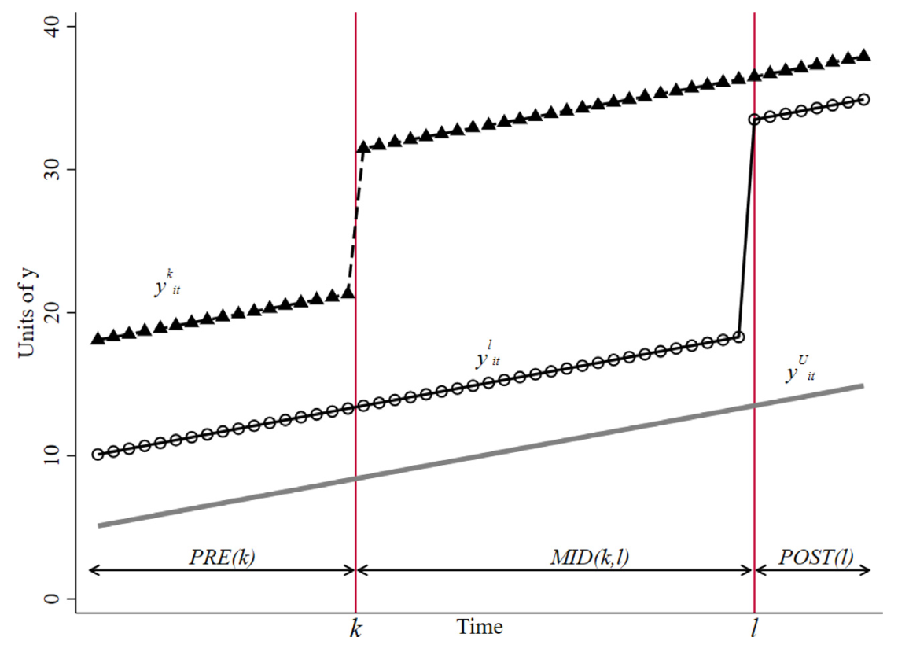
\[\begin{align} \bar{y}_{b}^{POST(a)} := \frac{1}{T - (a - 1)} \sum_{t = a}^{T} \frac{ \sum_{i} y_{it} \mathbf{1}\{t_{i} =b \} }{ \sum_{i} \mathbf{1}\{t_{i} =b \} } \end{align}\] Sample mean of units treated at \(t = b\) during post period for treatment day \(t = a\)
Bacon Decomposition
OLS estimator using model in Equation 5 is a weighted average of all possible two-by-two DD estimators
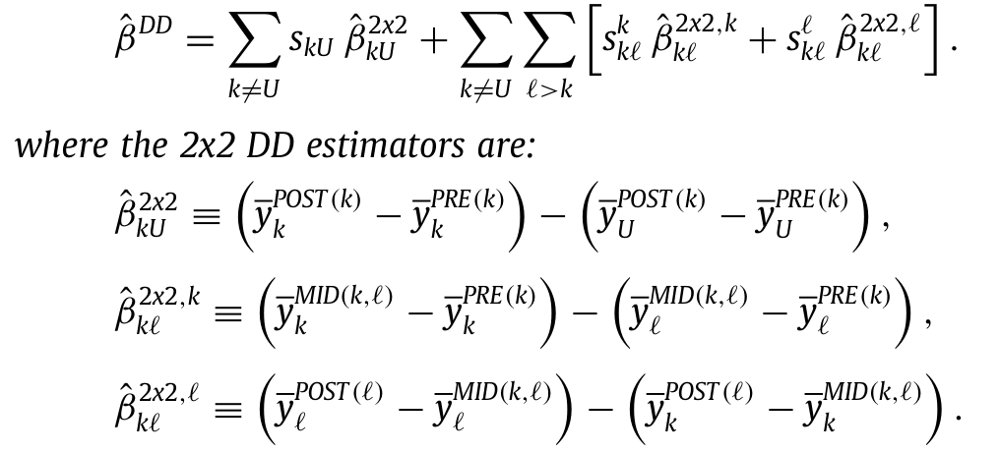
Forbidden comparison \(\hat{\beta}^{2 \times 2, \ell}_{k\ell}\): comparing group \(\ell\) with group \(k\); control group are units that are already treated in earlier period
Bacon Decomposition
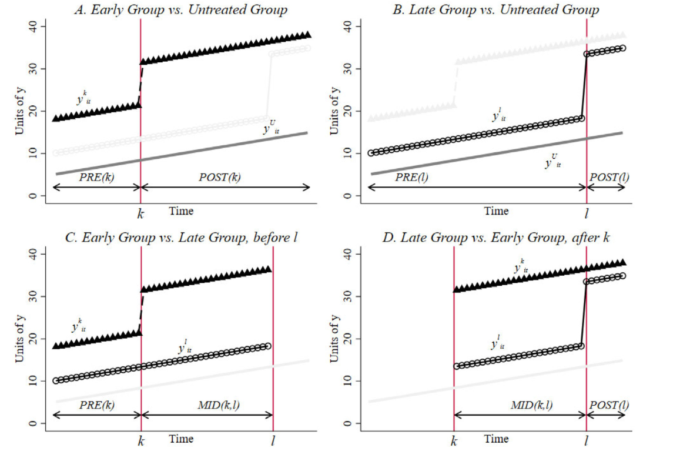
Dynamic TWFE
- Often interested in dynamic causal effects
- Dynamic TWFE:
\[\begin{align} Y_{i, t} = \alpha_{i} + \phi_{t} + \sum_{r \neq -1} \mathbf{1}\{R_{i, t} = r\} \beta_{r} + \varepsilon_{i, t} \end{align}\]
where \(R_{i, t} = t - G_{i}\) is time relative to treatment
- The \(\beta_{r}\)s equal a sensible causal estimand, right?
- Not generally, no!
- If the only heterogeneity is in time since treatment, they do
- If there is heterogeneity across cohorts, they don’t
- Again “forbidden comparisons” — see Sun and Abraham (2021)
- Wish: a method that allows for heterogeneity in time and cohorts
General theme in previous examples
- Starting point is the regression model
- Goal is to estimate some sensible causal estimand
- Starting from the regression model potentially leads us astray
- Hmm …
Solution
- Why start from the regression model?
- How about starting from the estimand and targeting it with whatever it takes?
- Maybe we could:
- Start with our estimand
- Do identification through causal assumptions
- End up with some estimable quantity that depends on nuisances
- Estimate the nuisances and then estimate our target parameter of interest
- Callaway and Sant’Anna 2021 do exactly that
- They don’t do DML; but they do provide a Neyman orthogonal score
Callaway and Sant’Anna 2021
- Still in Staggered Adoption setting
- Individuals partitioned into cohorts \(G_{i} = \min \{t \mid D_{i, t} = 1\}\)
- Generalize estimand from two-period DID Equation 2 to staggered adoption setting
- Allow for heterogeneity across time and cohorts directly
- Estimand: group-time average treatment effect
\[\begin{align} ATT(g, t) = E\left( Y_{t}(g) - Y_{t}(0) \mid G^{g} = 1 \right) \end{align} \tag{6}\]
where \(G^{g} := \mathbf{1}\{G = g\}\) and \(Y_{t}(0)\) counterfactual outcome
This estimand allow us to answer
Are ATTs heterogenous across groups and time?
Callaway and Sant’Anna 2021
- Let \(e = t - g\) the event time i.e. time elapsed since treatment
- Can stitch \(ATT(g, t)\)’s together to a new estimand: e.g. average effect of treatment on the treated \(e\) periods after treatment
- Plotting these correspond to classic “event study plots”
- Concretely, can aggregate \(ATT(g, t)\)’s with respect to \(e\) as
\[\begin{align} \theta_{es}(e) = \sum_{g \in \mathcal{G}} \mathbf{1}\{g + e \leq T\} P(G = g \mid G + e \leq T)ATT(g, g + e) \end{align}\]
- See the paper for other aggregation schemes (e.g. average effect for a given cohort across all post-treatment periods)
- Identification: assumptions needed similar to the one in the two-period case with covariates + some more
- See paper for doubly robust estimand with corresponding Neyman Orthogonal score
DML Staggered Adoption
- Starting from the estimand turned out to be the right way cf. Callaway and Sant’Anna 2021
- Our new friend:
- The group-time average treatment effect on the treated estimand, \(ATT(g, t)\)
- Besides enlightening us, Callaway and Sant’Anna 2021 also gave us a Neyman orthogonal score
- Estimand & Neyman Orthogonal score: all we need to do Double/Debiased Machine Learning
CSA2021 - example
- Python implementation
- Live coding in shell
DoubleML Package
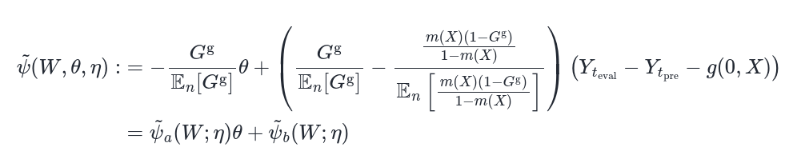
Instrumental Variables (IV)
- Causal DAG for IV
- We cannot always just “control for everything” to get at causal estimates
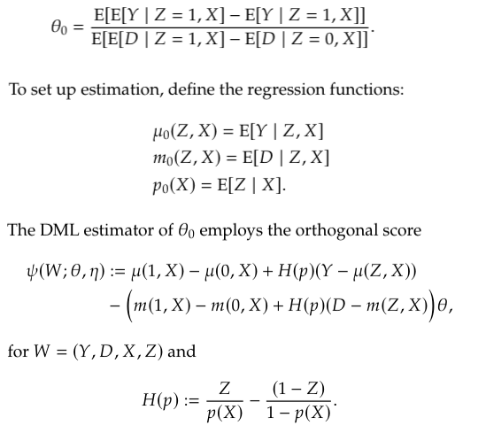
LATE
- LATE estimand
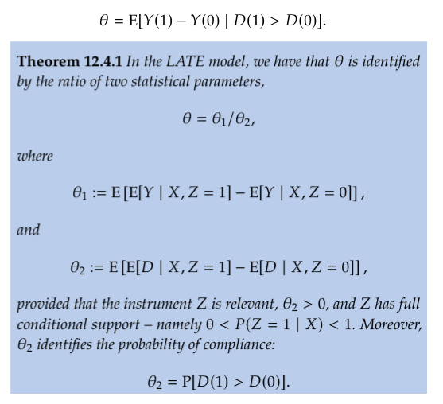
DML IV
- Neyman Orthogonal score